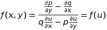
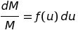

.png)
Интегрирующий множитель M(x, y) это такая функция от переменных x и y, умножив на которую, дифференциальное уравнение первого порядка
становится уравнением в полных дифференциалах:
Рассмотрим дифференциальное уравнение:
(1)
Если
То левая часть уравнения (1) не является дифференциалом некоторой функции. Однако при выполнении условий существования единственного решения уравнения (1), его можно привести к уравнению в полных дифференциалах умножением на некоторую функцию M(x,y) от переменных x и y.
Дифференциальное уравнение первого порядка имеет бесконечное число интегрирующих множителей (при выполнении условий существования единственного решения).
Доказательство:
Если существует решение уравнения (1), то его общий интеграл можно представить в виде: .png)
Возьмем дифференциал:
(2)
Отсюда:
С другой стороны, из уравнения (1):
Левые части уравнений равны. Поэтому равны правые части:
Или:
Тогда уравнение (2) можно переписать в виде:
Исходное уравнение (1) превратилось в полный дифференциал умножением на интегрирующий множитель:
что доказывает существование интегрирующего множителя.
Покажем, что существует бесконечно много интегрирующих множителей. Для этого выражение:
Умножим на произвольную функцию от :
Это выражение также является полным дифференциалом, поэтому множитель
также является интегрирующим множителем. Поскольку – это произвольная функция, то можно построить бесконечное число интегрирующих множителей.
Если известны два интегрирующих множителя, отношение которых не является постоянной, то их отношение является общим интегралом дифференциального уравнения:
Действительно, поскольку , то
Но, поскольку, – общий интеграл уравнения, то
Отсюда:
Этот метод аналогичен методу выделения полного дифференциала для уравнений в полных дифференциалах. Только здесь полный дифференциал удается выделить, умножая уравнение на множители. Для этого применяем формулы дифференцирования, записанные в дифференциальной форме:
В этих формулах u и v - произвольные выражения, составленные из любых комбинаций переменных.
Если сразу найти интегрирующий множитель не удается, то можно попытаться сгруппировать члены уравнения. Пусть мы имеем уравнение:
разбиваем его на сумму слагаемых:
Пусть первое слагаемое имеет интегрирующий множитель:
Умножаем уравнение на M1:
Далее следует подобрать такую функцию от U1 чтобы при умножении на нее, второе слагаемое стало полным дифференциалом:
Первое слагаемое при этом остается полным дифференциалом:
Тогда:
Далее следует подобрать такую функцию от , чтобы при умножении на нее, следующее слагаемое стало полным дифференциалом. И так далее, пока все выражение не станет полным дифференциалом.
Пусть имеется уравнение
для которого ищется интегрирующий множитель вида
где u=u(x,y) – заданная функция от переменных x и y.
Найдем такой интегрирующий множитель, или определим, что множителя такого вида не существует. Для этого умножим исходное уравнение на M:
Это уравнение будет уравнением в полных дифференциалах при выполнении условия
Или:
Теперь положим, что M – это функция от u, где u=u(x,y) – это заданная функция переменных x и y. Тогда
Подставляем:
Отсюда:
(3)
Левая часть этого уравнения является функцией от u. Поэтому и правая часть тоже должна быть функцией от u.
Таким образом, интегрирующий множитель заданного вида существует, если правая часть уравнения (3) является функцией от u:

В этом случае
Или

Интегрируем:
Отсюда
Поскольку постоянная C для интегрирующего множителя никакого значения не имеет, положим C=1: